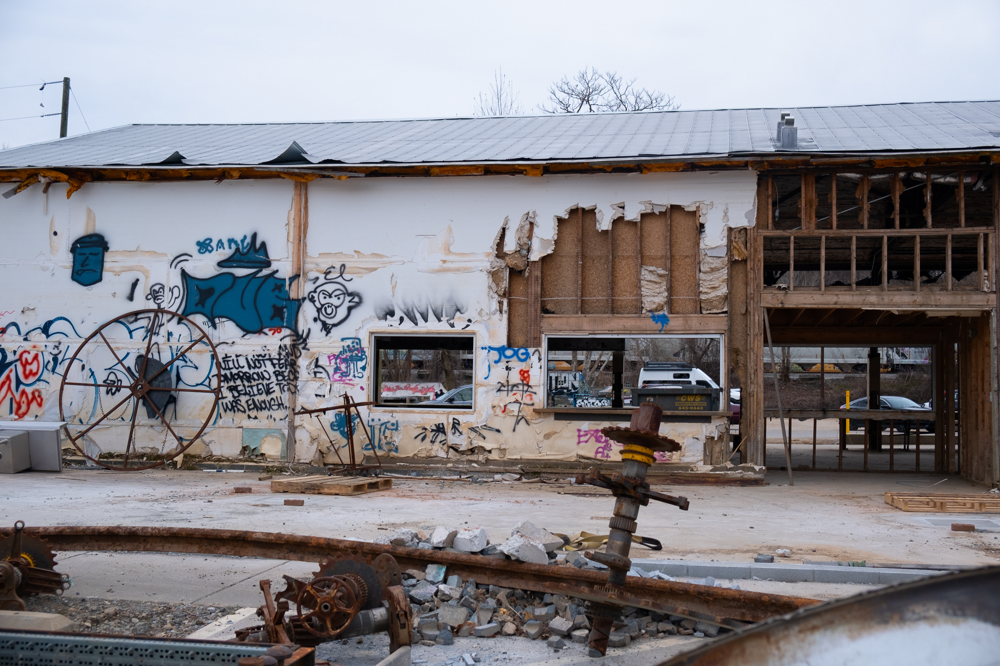
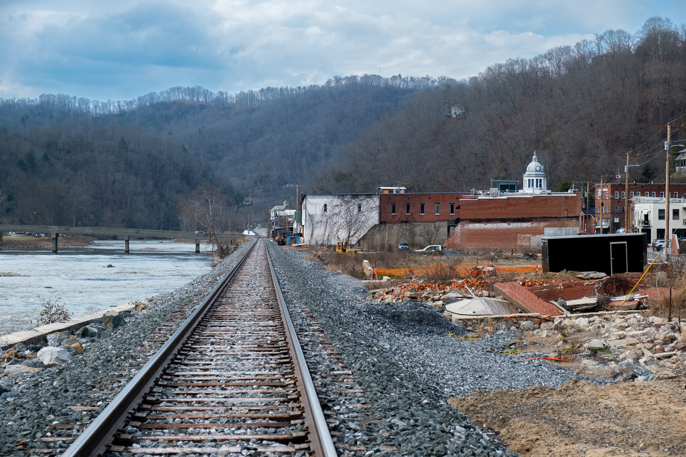
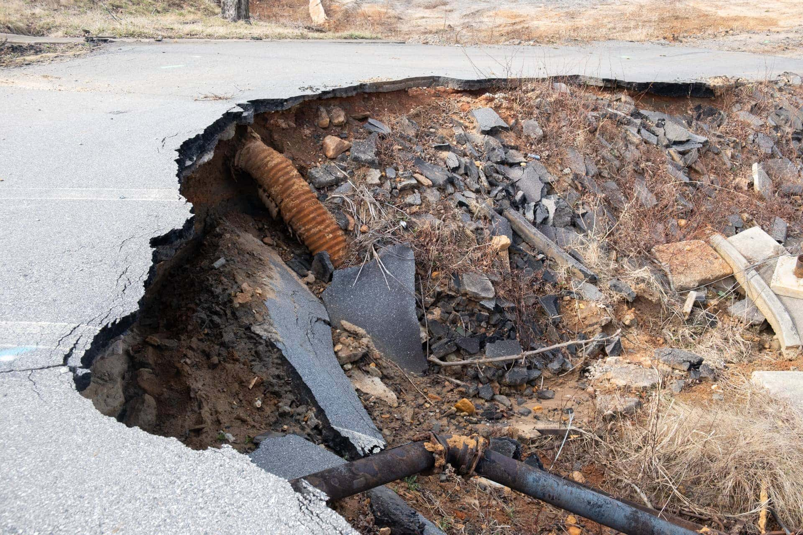
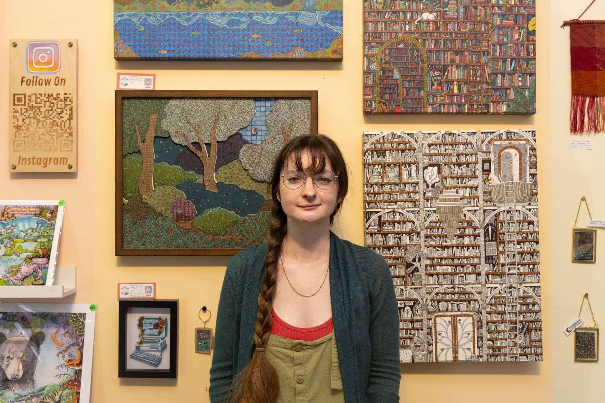

Heather Divoky immediately went into disaster preparation mode when she heard Hurricane Helene was headed for Asheville. In the days leading up to the storm, the artist and poet transported her larger, more expensive art pieces from her studio in the River Arts District, just off the banks of the French Broad River, to her more elevated home in West Asheville.
Growing up on the coast in Florida and North Carolina, Divoky moved to Asheville in 2020 because she considered its geography to be immune from the disastrous effects of hurricanes and extreme flooding. She thought of it as a "climate haven" — an inland location relatively exempt from the most severe, immediate impacts of climate change. "You see all this rain, but it never really hit Asheville," she said. "So that was a big factor in us coming up here…it felt safer."
But turns out she was wrong.
When Helene finally made landfall in Asheville and Western North Carolina after several days of circulating the Gulf of Mexico and the southern United States, it caught many residents, business owners, artists and even meteorologists by surprise. As a result, the absence of adequate storm preparedness measures had deadly ramifications, inflicting 107 deaths in North Carolina and causing billions in property damages for homeowners and businesses.
In the 18 months since the flood, Asheville has undergone a period of intense recovery. Local business owners and city officials have worked hard to get the economy back online and encourage tourists to return, which would significantly bolster the region's economy. But what officials and regional planners have done to aggressively confront the area's future storm preparedness is unclear. And while most agree the immediate aftermath needed to be addressed, some worry that decision-makers are failing to invest in infrastructures that will limit the devastation of future disasters.
"Any place in the country or the world that can get rain is not a climate haven," says North Carolina's Assistant State Climatologist Corey Davis. "We know rain events are getting more extreme. So if you can get rain, you can get too much rain."
In other words, it can happen almost anywhere. The last three years alone provide a stark map of what water-related weather can do in areas that were not prepared for the storms that befell them. In July 2023, flash flooding surprised residents of Vermont, causing widespread destruction and 11 fatalities. Two years later, in July 2025, floodwaters swelled in Central Texas, resulting in one of the nation's worst water-related disasters that killed 135 people, including 27 young girls and staff members, at a sleepaway camp on the edge of a river. Regional leaders there had been warned of the dangers of possible flooding, but to no effect.
And in between, in September 2024, Hurricane Helene made landfall in Buncombe County and Western North Carolina as a tropical storm, bringing catastrophic inland flooding, extreme winds, devastating storm surges and flash flooding.
As water funneled in from the mountains, the French Broad and Swannanoa rivers — two main waterways that run through the city — swelled to heights of 27 feet over what was typical. Over the next four days, the tropical storm brought more than 13 inches of rain to Asheville and up to 30 inches to the mountainous areas of the greater Buncombe County. To date, it was the worst flooding in the region's history.
And while it was described as a "1000-year storm," leading locals to believe they wouldn't need to prepare for another one like it for many centuries, science experts say it's critical people realize the next one could happen at any time.
"If I tell you that 2,500 square miles of Helene was a one-in-1000-year flood, you would not believe the number of people who tell me, 'Oh great. We won't have another flood for 999 years,'" said Jared Rennie, a scientist in the climatic science and services division of the National Oceanic and Atmospheric Administration branch in Asheville.
"But that's not what that means. [The probability] is an annual occurrence," he clarified. "What that means is, in a given year, the chances of that amount of rainfall to fall is 1 in 1,000. … Or if it's a one-in-100-year event, [people think] it's going to happen next century." And then they get confused when there are three "one-in-100-year" events in five years. They say, "'What does that mean?'" Rennie said.
These are the sorts of misunderstandings and distractions that lead to ill-prepared communities, experts say, with potentially disastrous consequences.
Divoky, like almost everyone who lives and works in this tourist outpost known for its beautiful mountains and flourishing arts scene, did not fathom any of this.
For more than a year before the storm, she worked happily in Pink Dog Creative, a vibrant collective of studios, coffeehouses and restaurants along the upper portion of the River Arts District, known locally as RAD. Steps away from the river, the district boasted more than 300 artists in what was repurposed in the early 2000s from an industrial corridor to a hip, mixed-use neighborhood that trumpeted river views and easy access to "Asheville's scenic waterway."

It was that same proximity that led to RAD suffering the most severe damage in the storm. More than 80% of buildings were affected, with two thirds of the district washed away or reduced to rubble. Over 100 artists were displaced, many of whom have yet to return. There is little hope of recovering what they lost, contributing to an estimated $1 billion in property damage in that district alone.
As for Divoky, who was able to save all of her portraits but was displaced from her approximately 300 square foot studio for two months, the 37-year-old says she has learned the hard lesson that climate havens do not actually exist. Divoky admits she should have known better, since her earliest memories were wrought by the terrible storms she survived as a child — hurricanes Florence and Bertha. Between the two, she lost most of her belongings including irreplaceable items like her grandmother's quilts.
Now, reality has set in: "I swapped from the mindset of, 'OK, I'm safe,' to 'I'll never be safe, and now I just have to acclimate to that idea and be as prepared as I can.'"
Experts say she's got that right. Today, while Asheville remains on a path to recovery, experts anticipate it is only a matter of time until the next major climate event strikes, which is not exclusive to extreme flooding.
"Last spring really wasn't a one-off," Davis, the climatologist, said. "It was a preview of what's to come in these areas."
Before Tropical Storm Helene hit, the area was already experiencing around eight to 10 inches of what meteorologists call "predecessor rains" caused by an unnamed stationary system that was triggered by the heightened moisture from the Gulf of Mexico. So when Helene made its way to Asheville four days later, it had technically "downgraded" to a tropical storm, signaling a weaker system using the metric of wind conditions.
But those back-to-back rainfall patterns, considered "compounding events," created a sort of double whammy situation that "made things really bad," said Rennie.
In the days leading up to the storm, meteorologists sounded the alarm for state and local authorities, forecasting an additional eight to 10 inches of rain concentrated on the French Broad, Swannanoa and Pigeon rivers. The storm's arrival, which came on the heels of the predecessor rains, warranted a "high-risk day" warning.
"We don't often see high-risk days, but when we do, they are serious. People need to stay off the roads, stay home if possible and be prepared to act immediately. This is a life-threatening situation," wrote Trisha Palmer, warning coordination meteorologist for the National Weather Service, during a NWS briefing two days before the storm hit.
Later that same day, Sept. 25, Gov. Roy Cooper heeded these warnings, issuing a state of emergency for several counties in Western North Carolina including Buncombe County, which encompasses Asheville and the surrounding towns.
The following day, officials from Buncombe and Henderson counties held a virtual news conference warning residents of "catastrophic" and "historic" flooding, especially near the French Broad and Swannanoa rivers. Soon after, on Sept. 27, The State Emergency Operations Center was activated to "monitoring" status, enabling emergency preparations that included stationing North Carolina National Guard units and emergency response teams. Mandatory evacuations were implemented for waterfront towns using the Integrated Public Alert and Warning System, FEMA's alert system for local emergencies.
But the water was already cresting. For many, evacuation was no longer an option.

Although meteorologists were aware of the likely potential for disaster, the disconnect between residents and state and local authorities had catastrophic ramifications.
Rennie says meteorologists do a "very good job at the physical science" but they "suck at science communication," making it difficult to accurately portray urgency to the public in the face of exacerbated weather conditions.
They knew the predecessor rainfall event and the system were coming, "but getting the people to react to it — whether it's to evacuate or to prepare, 'fill up your buckets' — that's something we're still trying to figure out," Rennie said.
This forecasting knowledge is invaluable, but it also leaves those who study weather events for a living feeling helpless when overcoming the public disconnect.
"People have survivor's guilt. I have something called meteorological survivor's guilt. I've kind of coined that, and I struggle with it because I knew what the forecast was," Rennie reflected. "If you look back — and you know hindsight is 2020 — could we have had a bigger voice?"
Helene stands as the worst water disaster Western North Carolina has seen to date. But this flooding is not new for the region.
In the days leading up to Helene, meteorologists referenced Asheville's last catastrophic flooding event: The Great Flood of 1916. Over two days, several inches of flooding nearly wiped away the surrounding mountain towns like Chimney Rock and Bat Cave. Hurricane Floyd also brought torrential rainfall in 1999, although it never reached the level of destruction seen in 1916.
Located in the heart of the Blue Ridge Mountains, Asheville sits like a bowl at the basin of the Swannanoa River, which feeds into the French Broad River, as both rivers flow from the surrounding mountains into the city. When the rivers swell, the city becomes extremely vulnerable to flooding.
"In some ways, Asheville is probably one of the more vulnerable spots in the state. They just don't see those events as frequently as, for instance, places right along the coastline," Davis said. "I think some of these historical events have given us clues that Asheville was not the climate haven that a lot of people would have liked to believe, but again, a lot of these big events have been historically infrequent."
So when Helene hit, to experts, it seemed obvious; the clues had always been there. But to residents, this urgency was not so clear. Many failed to adequately prepare, never expecting the worst.
Mira Gerard, an art professor at Eastern Tennessee State University, owned Tyger Tyger Gallery in RAD, a testament to her late father, Jonas Gerard, who had repurposed the building as a painting studio until he passed away in 2021. She was one of the lucky few gallery owners in RAD who had flood insurance.
For Gerard, historical floods over the past 10-15 years dictated her decision making. To her, severe flooding was always "not an if, it's a when. When it happens, it's gonna be big…but it hadn't happened since 1916."
In anticipation of the flooding, Gerard and a handful of artists relocated much of their artwork to higher floors of the building. But it was her flood insurance, which cost her nearly $10,000 a year to maintain, that saved her. She ended up sharing the insurance payout she received with over 30 affected artists who lost their work.
"Nobody had insurance. And if they did, they didn't talk about it," Gerard said. "People I talked to unilaterally seemed to be saying, 'I lost everything and didn't have insurance.' So I did not hear of anybody other than me."
NOAA Atlas 14 is the current standard for measuring precipitation frequency, supplying data on "1-in-N year" events. Government agencies like the National Weather Service use this language when communicating the strength of the storm to the public.
But the fact is, this nomenclature has become obsolete, experts say. And it needs to change.
Storms like Helene — "thousand year storms" — are becoming alarmingly more frequent due to global climate change. In the last 25 years, there have been nine storms in North Carolina that would be considered a thousand-year event.
"Researchers have looked at the environment that caused Hurricane Florence to develop, what caused it to slow down, what caused it to produce those extreme rainfall totals, and found that the fingerprints of climate change are really all over a storm like that," Davis says. "When Helene came in, we also started to recognize those fingerprints."
Today, NOAA Atlas 14 is getting an update. Set to be released in 2026, Atlas 15 is currently under development. The updated system will use future climate projections to account for climate change. For the first time, the technology will be able to project rainfall patterns through the year 2100 and account for future trends. Once implemented, the new technology will help communities nationally become more resilient.

This isn't the only important shift on the horizon on the federal level. Another significant effort, led by those who recognize that climate change is not going away, is under way in the form of new legislation to create a National Weather Safety Board. Board members, who would be appointed by the president and confirmed by the Senate, would investigate severe weather disasters, modeled after the National Transportation Safety Board. If the Board voted to launch an investigation, which would determine what went wrong during major weather disasters to better protect lives and property, it could issue reports with actionable recommendations to agencies like NOAA and the National Weather Service.
As severe storms and weather events worsen, action at the federal level is promising. But things are changing on the state level as well.
In late 2018, former Gov. Roy Cooper established the North Carolina Office of Recovery and Resiliency in response to Hurricane Florence. After Helene, new Gov. Josh Stein restructured that office into what's now called "State Resilience Office." He's also put former state climatologist Kathie Dello, who has extensive experience liaising with communities, at the helm of it. In fall 2025, she was named the North Carolina assistant secretary of resilience.
The name change indicates that the highest office in the state is taking steps in the right direction, experts say.
Davis thinks it "also speaks to another element of their job, which is trying to figure out how to make the state more resilient, more prepared and better adapted. For storms like this, we know they're not going away. If anything, they're happening more often. They're getting worse when they do happen, so I think that that's a smart way of helping the state be prepared for events like this."
The restructuring of the resiliency office in response to Helene is a promising sign that the state government is prioritizing storm preparedness and taking the weather effects seriously.
In 2025, Gov. Stein also delegated development of a new North Carolina Climate Science Report to the State Climate Office. Set to be released in October 2026, the updated report will feature a dedicated section on the ways in which storms are getting worse. These measures will help prepare people for the unexpected. Beyond storms, North Carolina is vulnerable to several climate threats.
Local and county decision makers are also shifting preparedness strategies to make sure the fallout from Helene is never repeated.
Buncombe County, along with six municipal partners including the City of Asheville, approved the Helene Recovery Plan on Nov. 18, 2025, a comprehensive five-year strategy that aims to strengthen disaster preparedness and support long-term community resilience. The Preparedness Action Plan, a sub section of the larger report, will strengthen the county's communication and alert systems and equip infrastructure with long-term safety precautions.
"We have to back that up and say, what's our opportunity in the realm of mitigation, and how do we stop making such a mess, and when is it too late?" says Kiera Bulan, the interim sustainability director for the city of Asheville. "I think trying to balance those two things and not being so just completely reactive."
On a city level, this indicates a shift in the way the Sustainability Department thinks about emergency response — pivoting from adaptation to mitigation.
"We know the real threats are here. We have to live with our climate realities that are present in this moment," Bulan said. "And so that means hardening our buildings. That means thinking where we build, or what our evacuation plans are — being responsive to our climate realities."
Without its state, county and community partnerships, the city of Asheville's response to Helene has been limited to the buildings that fall directly under its jurisdiction. RAD, for example, is within jurisdiction. But even though the artist district is steps from the river and in direct and immediate threat if another major flooding event hits Asheville, the city has "made no decision to relocate" it, according to the local government's "Asheville Asks" website.
But Helene-prompted changes are taking effect. In January 2025, the City Council unanimously voted to change zoning requirements in floodplains. Buildings are now required to elevate their foundations at least 2 feet above the base flood level. This was done in line with federal regulations to ensure property owners don't lose critical funding from federal flood insurance coverage, which severely hindered property owners' post-Helene recovery.
Mitigation-based strategies are also under way, including initiatives to support the community hubs that popped up during Helene, some of which have remained intact to provide community services for future disasters.
Leah Ferguson is the executive director of Thrive Asheville, a collaboration between local residents and community leaders to understand the specific challenges that face Asheville and the surrounding community. The nonprofit is currently partnering with the city to map the informal and formal resilience hubs — public spaces like the library, churches and community centers that proved essential during Helene in providing water, power and supplies when traditional infrastructure failed — in the hopes of better equipping residents for the next disaster.
"We're not going to survive this by ourselves. That's the thing about Helene, we didn't," Ferguson said. "We didn't have communications. There was no information. We had no electricity. When the water went out, people didn't even know you had to leave your house." Organizations like Thrive Asheville are critical to filling in those gaps that the city can't tackle on its own.
On the other hand, while the city has worked with county partners to update emergency response systems, there are currently no publicly available updated evacuation plans if residents need a safe way out.
Resiliency is experiencing an incredibly promising shift, experts say, especially in a purple state like North Carolina that has not always held climate change's worsening effects at the top of its priorities.
But experts emphasize that building resilience on the local level is critical to ensuring the most vulnerable communities are protected not just from worsening storms but from other "quieter threats" — such as future extreme heat from warming weather, or the many wildfires that resulted from downed power lines mixing with fallen tree debris after Helene.
Regardless of the threat, everyone agrees it will take a multi-pronged approach to get the community ready for whatever is in front of them.
"When you're just trying to survive…you don't think about planning for the next big thing," said Divoky, the Asheville artist who used to think she was safe from storms in Asheville. "You're just thinking about trying to make it through the day."

As a child, she experienced that tug and pull during bad storms in her own family: "That's something that people see a lot, especially with hurricane preparedness and stuff like that. On my dad's side, he's always been like, 'Well, you need to do this in case this happens.' And my mom's just like, 'You just gotta hammer through it, girl.'"
Helene made one thing very clear to Divoky. That is, from now on, her dad's approach is the way to go.